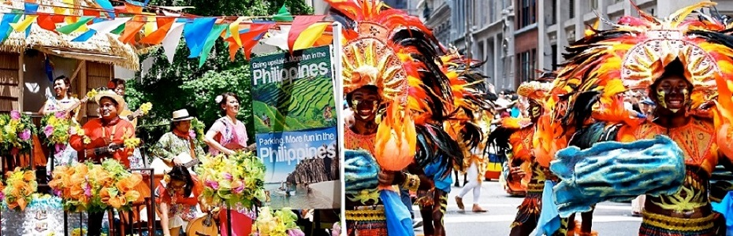

119th anniversary of Philippine Independence Day Celebration!
The Philippine Independence Day Parade is a celebration for the Filipino American community in the Northeast United States, home to more than half a million Filipinos. Its main purpose is to create awareness of Philippine culture and to raise funds for charity projects in the USA and the Philippines.
Philippine Independence, as a celebration in America, is largely an invention of the last decade—rather than having distinct cultural significance, the event is instead manufactured as a cultural awareness campaign.
Earlier generations of Filipino immigrants did not celebrate Philippine Independence in significant ways. Philippine Independence is widely celebrated among Filipinos in the United States and is now a major event for many Filipino Americans to rekindle their roots and heritage. The largest among Philippine Independence celebrations in the United States takes place in New York City every first Sunday of June.
The Ati-atihan Festival in Woodside New York
The Ati-Atihan Festival is a feast held annually in honor of the Santo Niño (Infant Jesus), concluding on the third Sunday, in the island and town of Kalibo, Aklan in the Philippines. The name Ati-Atihan means "to be like Atis" or "make believe Ati's". Aetas, known colloquially as Ati, were the primary settlers of the islands according to history books. They too are the earliest settlers of Panay Island where the province of Aklan is located.
The festival consists of tribal dance, music, accompanied by indigenous costumes and weapons, and parade along the street. Christians and non-Christians observe this day with religious processions. It has inspired many other Philippine Festivals including the Sinulog Festival of Filipino Town Woodside NY, both adaptations of the Kalibo's Ati-Atihan Festival, and legally holds the title "The Mother of All Philippine Festivals" in spite of the other two festivals' claims of the same title.